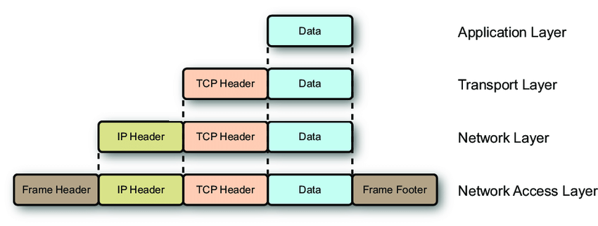
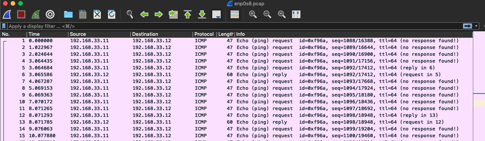
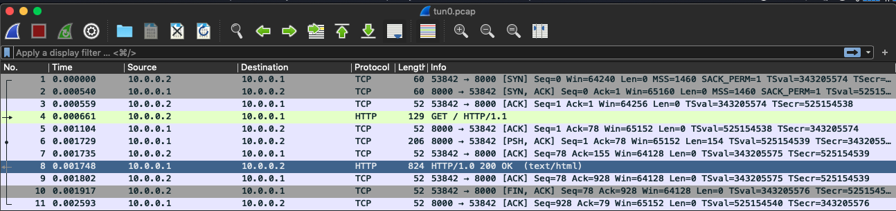
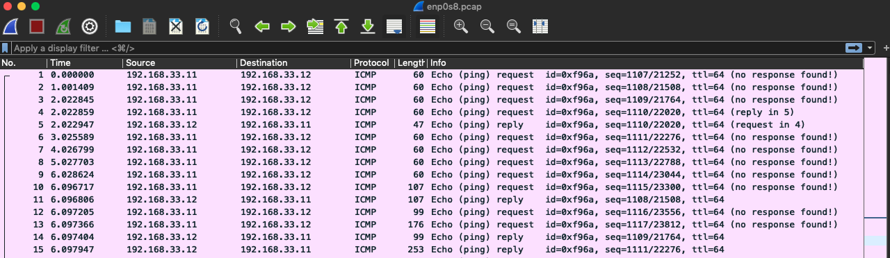
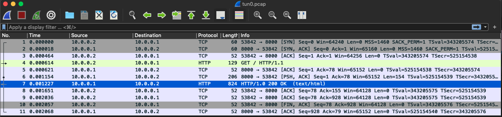

因为公司有开发泄露源码在 Github，对公司声誉造成一定影响，公司层面推广起瘦终端，所有开发一起背锅 :( 。在瘦终端里，网络严格管控，vscode 下载插件都难，需要申请 IP 白名单。开发只允许在瘦终端里接触 git 仓库，只能向瘦终端拷贝文件，反之不能。这样就能防住代码泄露么？
搞笑的办法，瘦终端生成二维码，主机扫描，数据传输问题搞定。
从网络角度，怎么解决呢。我们来严肃看待这个技术问题。
ICMP
实践发现，瘦终端里不能访问百度，但是能 ping 通。从 TCP/IP 的角度，瘦终端在网络上只是 TCP 传输层被流量管控了，IP 层还是畅通无阻的。
下图为 TCP/IP 的层次结构，TCP 包封装于 IP 包。

目前网站的基石是 HTTP/TCP 协议，代理也普遍是基于 HTTP/TCP 的，shadowsocks 翻墙的思路不通。
所以 ICMP 协议是否能作为代理协议呢。从封包的角度，ICMP 与 TCP 一样，也是封在 IP 包中的。

http://web.deu.edu.tr/doc/oreily/networking/firewall/ch06_03.htm
ICMP 有 Data 字段，可用于存储需要被代理的 TCP 包（协议允许附加最大 64K 大小的 Payload）。从而突破防火墙。

https://www.researchgate.net/figure/ICMP-packet-structure_fig5_316727741
ICMP tunnel
ICMP 隧道，使用 ICMP 协议建立的两台计算机的连接。可用该隧道传输 TCP 流量。
An ICMP tunnel[1] establishes a covert connection between two remote computers (a client and proxy), using ICMP echo requests and reply packets. An example of this technique is tunneling complete TCP traffic over ping requests and replies.
前人早已栽树，开源实现： https://github.com/jamesbarlow/icmptunnel
建立 ICMP tunnel
Linux 上编译 icmptunnel：
$ git clone git@github.com:jamesbarlow/icmptunnel.git
$ make
没在瘦终端试验，因为还没尝试将 icmptunnel 编译到 Windows 平台，https://github.com/esrrhs/pingtunnel 是跨平台的，可以参考下。
Vagrant 启动两台 Ubuntu 虚拟机试验下，两台虚拟机通过网卡 enp0s8 互联，假设两者通信只允许 ICMP。
Proxy server 192.168.33.12：
# echo 1 > /proc/sys/net/ipv4/icmp_echo_ignore_all
# ./icmptunnel –s
opened tunnel device: tun0
(ctrl-z)
# bg
# ifconfig tun0 10.0.0.1 netmask 255.255.255.0
# ifconfig
enp0s8: flags=4163<UP,BROADCAST,RUNNING,MULTICAST> mtu 1500
inet 192.168.33.12 netmask 255.255.255.0 broadcast 192.168.33.255
inet6 fe80::a00:27ff:feb6:74f5 prefixlen 64 scopeid 0x20<link>
ether 08:00:27:b6:74:f5 txqueuelen 1000 (Ethernet)
RX packets 4808 bytes 321774 (321.7 KB)
RX errors 0 dropped 0 overruns 0 frame 0
TX packets 1077 bytes 95776 (95.7 KB)
TX errors 0 dropped 0 overruns 0 carrier 0 collisions 0
lo: flags=73<UP,LOOPBACK,RUNNING> mtu 65536
inet 127.0.0.1 netmask 255.0.0.0
inet6 ::1 prefixlen 128 scopeid 0x10<host>
loop txqueuelen 1000 (Local Loopback)
RX packets 44 bytes 3890 (3.8 KB)
RX errors 0 dropped 0 overruns 0 frame 0
TX packets 44 bytes 3890 (3.8 KB)
TX errors 0 dropped 0 overruns 0 carrier 0 collisions 0
tun0: flags=4305<UP,POINTOPOINT,RUNNING,NOARP,MULTICAST> mtu 1500
inet 10.0.0.1 netmask 255.255.255.0 destination 10.0.0.1
inet6 fe80::2743:f01:5f93:4c90 prefixlen 64 scopeid 0x20<link>
unspec 00-00-00-00-00-00-00-00-00-00-00-00-00-00-00-00 txqueuelen 500 (UNSPEC)
RX packets 156 bytes 18219 (18.2 KB)
RX errors 0 dropped 0 overruns 0 frame 0
TX packets 134 bytes 32887 (32.8 KB)
TX errors 0 dropped 0 overruns 0 carrier 0 collisions 0
Client 192.168.33.11：
# echo 1 > /proc/sys/net/ipv4/icmp_echo_ignore_all
# ./icmptunnel 192.168.33.12
opened tunnel device: tun0
connection established.
(ctrl-z)
# bg
# ifconfig tun0 10.0.0.2 netmask 255.255.255.0
# ifconfig
enp0s8: flags=4163<UP,BROADCAST,RUNNING,MULTICAST> mtu 1500
inet 192.168.33.11 netmask 255.255.255.0 broadcast 192.168.33.255
inet6 fe80::a00:27ff:fe65:dae7 prefixlen 64 scopeid 0x20<link>
ether 08:00:27:65:da:e7 txqueuelen 1000 (Ethernet)
RX packets 1180 bytes 118335 (118.3 KB)
RX errors 0 dropped 0 overruns 0 frame 0
TX packets 4603 bytes 292845 (292.8 KB)
TX errors 0 dropped 0 overruns 0 carrier 0 collisions 0
lo: flags=73<UP,LOOPBACK,RUNNING> mtu 65536
inet 127.0.0.1 netmask 255.0.0.0
inet6 ::1 prefixlen 128 scopeid 0x10<host>
loop txqueuelen 1000 (Local Loopback)
RX packets 122 bytes 22468 (22.4 KB)
RX errors 0 dropped 0 overruns 0 frame 0
TX packets 122 bytes 22468 (22.4 KB)
TX errors 0 dropped 0 overruns 0 carrier 0 collisions 0
tun0: flags=4305<UP,POINTOPOINT,RUNNING,NOARP,MULTICAST> mtu 1500
inet 10.0.0.2 netmask 255.255.255.0 destination 10.0.0.2
inet6 fe80::673f:aedd:d37e:afc4 prefixlen 64 scopeid 0x20<link>
unspec 00-00-00-00-00-00-00-00-00-00-00-00-00-00-00-00 txqueuelen 500 (UNSPEC)
RX packets 130 bytes 32695 (32.6 KB)
RX errors 0 dropped 1 overruns 0 frame 0
TX packets 156 bytes 18219 (18.2 KB)
TX errors 0 dropped 0 overruns 0 carrier 0 collisions 0
试验联通性：
Server 上创建一个 web server。
$ python3 -m http.server 8000
Client 上 curl：
$ curl 10.0.0.1:8000
<!DOCTYPE HTML PUBLIC "-//W3C//DTD HTML 4.01//EN" "http://www.w3.org/TR/html4/strict.dtd">
<html>
<head>
...
这样，两台虚拟机通过 ICMP 协议建立 tunnel 成功。Client (10.0.0.2) 可通过 TCP 协议访问 Proxy Server (10.0.0.1)。
Network Traffic
Client/Server 上抓包，假设 enp0s8 网卡上，client -> server 只有 ICMP 协议流量。
# tcpdump -i tun0 -w tun0.pcap
# tcpdump -i enp0s8 -w enp0s8.pcap
Client 执行 curl 10.0.0.1:8000。
Client enp0s8：

Client tun0：

Server enp0s8：

Server tun0：

如预期，enp0s8 网卡上只有 ICMP 协议通信，而 tun0 允许 HTTP/TCP。
SSH 隧道代理
ssh 隧道翻墙跟连普通服务器没啥两样了。
Client 生成 SSH 秘钥：
# ssh-keygen
# cat ~/.ssh/id_rsa.pub
Proxy server 让 client root 免密登录：
# vim ~/.ssh/authorized_keys
Client 建立 socks 代理：
# ssh -D 8080 -N root@10.0.0.1
代理测试：
# curl -x socks5h://localhost:8080 http://baidu.com/
<html>
<meta http-equiv="refresh" content="0;url=http://www.baidu.com/">
</html>
原理
流程图借用 https://github.com/DhavalKapil/icmptunnel
Overall Architecture
示例中貌似 Client/Proxy Server分别是通过 tun0 网卡上的IP 通信。
Client 与 Proxy Server 之间通过 ICMP 协议通信，TCP/UDP over ICMP。Client 发送 Echo Request，Proxy Server 发送 Echo Reply。
+--------------+ +------------+
| | ICMP traffic | | IP traffic
| Client | -------------------> | Proxy | ------------------>
| | <------------------- | Server | <------------------
| | through restricted | | proper internet
+--------------+ internet +------------+
Client Architecture
+--------------+ +------------+
| | IP traffic +------+ IP traffic | | ICMP traffic
| User | ---------> | tun0 | ---------> | icmptunnel | --------------->
| Applications | <--------- +------+ <--------- | program | <---------------
| | (Virtual Interface) | | restricted
+--------------+ +------------+ internet
Proxy Server Architecture
+------------+
ICMP traffic | | IP traffic +------+ NAT/Masquerading
---------------> | icmptunnel | ------------> | tun0 | --------------------->
<--------------- | program | <------------ +------+ <---------------------
restricted | | (Virtual Interface) proper internet
internet +------------+
实现注意事项
The client will perform all its communications using ICMP echo request (ping) packets (type 8), whereas the proxy will use echo reply packets (type 0)
Both the client and proxy maintain their own sequence number, and also a number indicating the last sequence number acknowledged by the remote peer.
总结
除了瘦终端这个场景，如果你有在公共场所，比如酒店，用过需要网页注册登录才能使用的 WIFI，在不登录的情况下，你的主机只被分配了 IP，而没有浏览网页的能力。icmptunnel 这个工具就能派上用处了。
道高一尺魔高一丈，要是被网管封禁了 ICMP 流量或是只允许定长的 ICMP 包，就 GG 了。
One way to prevent this type of tunneling is to block ICMP traffic, at the cost of losing some network functionality that people usually take for granted (e.g. it might take tens of seconds to determine that a peer is offline, rather than almost instantaneously). Another method for mitigating this type of attack is to only allow fixed sized ICMP packets through firewalls, which can impede or eliminate this type of behavior.[3]
本文仅仅是一个技术探讨，切莫在犯罪的道路上越走越远。
参考
- ICMP tunnel https://en.wikipedia.org/wiki/ICMP_tunnel
- icmptunnel: Pivot with Ping https://labs.f-secure.com/tools/pivot-with-ping/
- 内网渗透之ICMP隐藏隧道 https://xz.aliyun.com/t/7875#toc-4
- 内网渗透之内网穿透 https://xz.aliyun.com/t/7701
- Ping Tunnel http://www.cs.uit.no/~daniels/PingTunnel/
Last modified on 2020-09-03